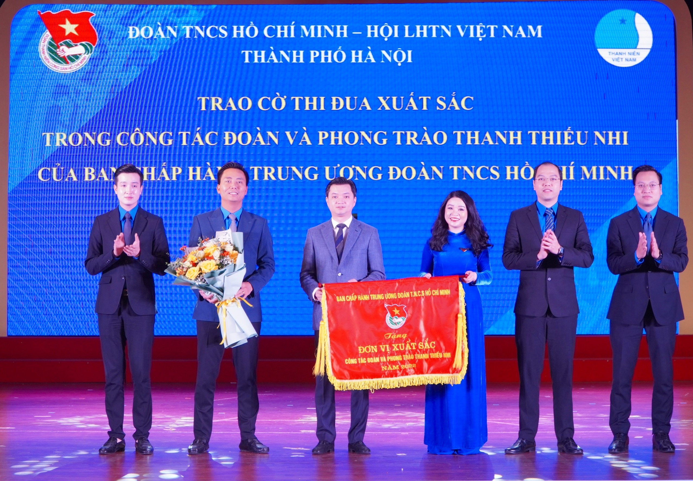
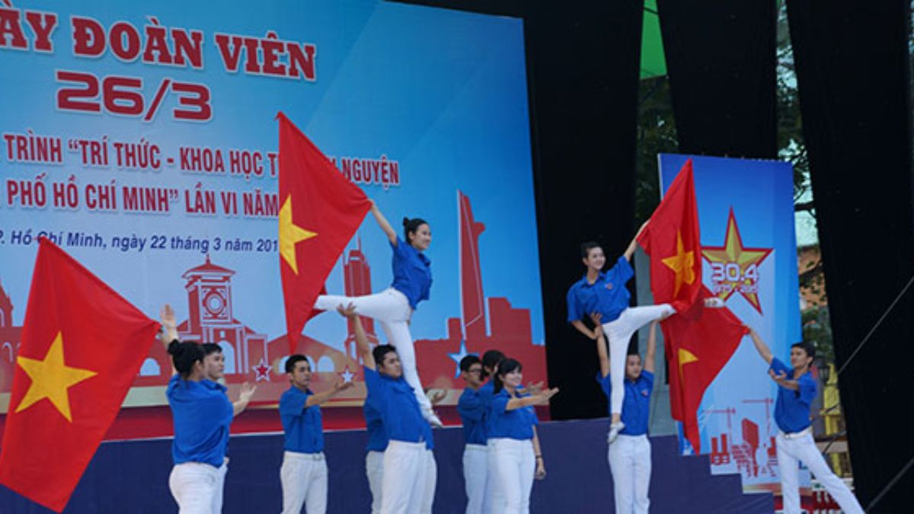

Lời Ngỏ
Ngày 26/3 là dịp để tuổi trẻ Việt Nam tự hào ôn lại truyền thống vẻ vang của Đoàn Thanh niên Cộng sản Hồ Chí Minh do Hồ Chí Minh sáng lập và rèn luyện. Trải qua hơn chín thập kỷ, Đoàn luôn là ngọn cờ tiên phong, tập hợp và dẫn dắt thanh niên sống có lý tưởng, hoài bão và trách nhiệm với quê hương, đất nước.
Nhân kỷ niệm ngày thành lập Đoàn, mỗi đoàn viên, thanh niên hãy tiếp tục phát huy tinh thần xung kích, sáng tạo, không ngừng học tập và rèn luyện, góp sức xây dựng Tổ quốc ngày càng giàu đẹp, văn minh.
Lịch sử hào hùng ngày 26/3
Đoàn Thanh niên Cộng sản Hồ Chí Minh được thành lập ngày 26/3/1931 tại Hội nghị Trung ương Đảng lần thứ 2 ở Sài Gòn, dưới sự chỉ đạo của Đảng và Chủ tịch Hồ Chí Minh. Tổ chức ra đời nhằm tập hợp, giáo dục thanh niên yêu nước, đóng góp quan trọng vào sự nghiệp giải phóng dân tộc, xây dựng đất nước.
Các giai đoạn phát triển và tên gọi của Đoàn
1931 - 1936: Đoàn TNCS Việt Nam, Đoàn TNCS Đông Dương.
1937 - 1939: Đoàn Thanh niên Dân chủ Đông Dương.
11/1939 - 1941: Đoàn Thanh niên phản đế Đông Dương.
5/1941 - 1956: Đoàn Thanh niên cứu quốc Việt Nam.
25/10/1956 - 1970: Đoàn Thanh niên Lao động Việt Nam.
2/1970 - 11/1976: Đoàn Thanh niên lao động Hồ Chí Minh.
12/1976 đến nay: Đoàn Thanh niên Cộng sản Hồ Chí Minh.
Góc Ảnh Hoạt Động


Lịch sử hình thành
Mời các bạn xem video: "Lịch sử ra đời ngày thành lập Đoàn TNCS Hồ Chí Minh 26/3"